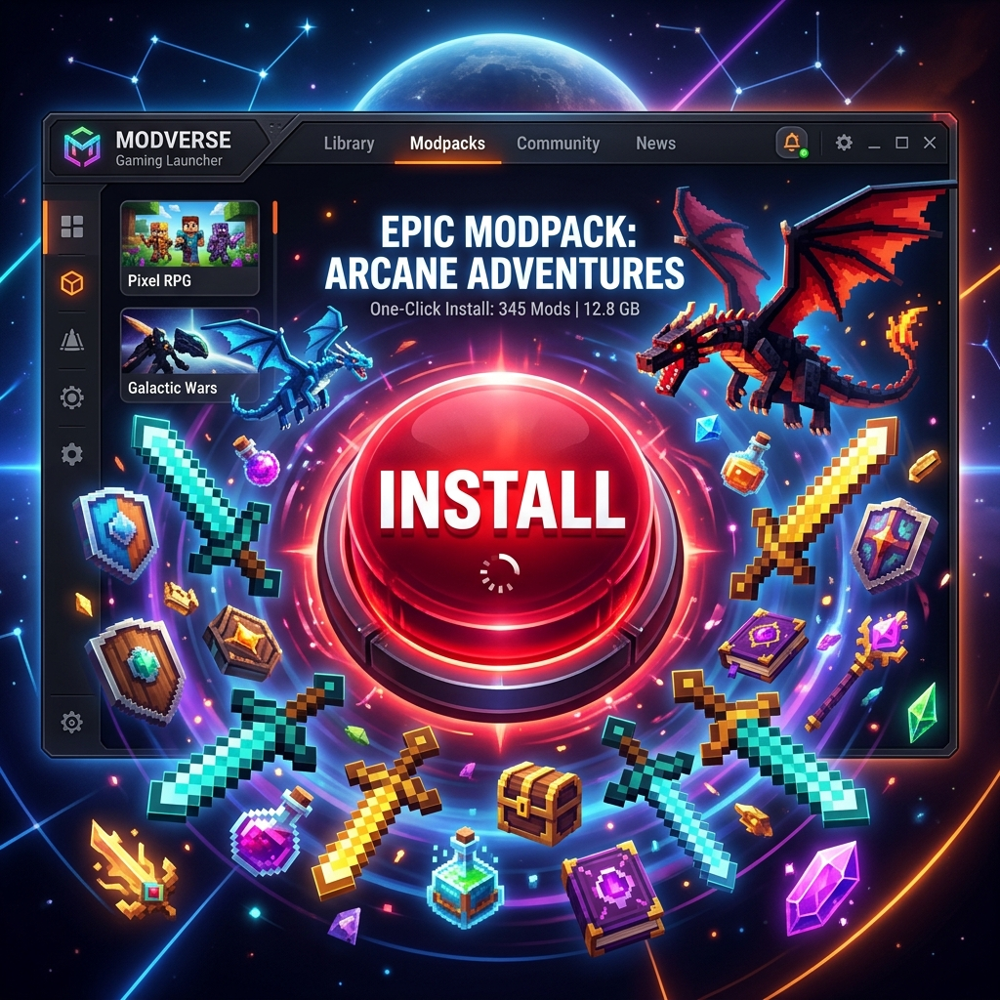

Categoría: Guías del Launcher
Cómo instalar y jugar Modpacks gigantes con 1 solo clic
LFZ Team
•
10 de Agosto, 2026

No más instalaciones manuales aburridas
Modpacks como Better MC, RLCraft, o Prominence II contienen entre 150 y 300 mods, además de configuraciones y scripts personalizados. Intentar descargar cada mod uno por uno para jugarlo es imposible. Aquí te mostramos cómo hacerlo de la manera fácil.
El poder del LFZ Launcher
El LFZ Launcher cuenta con integración total para descargas de Modpacks automatizadas. Todo lo que necesitas es buscar el nombre del modpack, y el programa hará el trabajo sucio por ti.
Pasos para la instalación perfecta:
- No necesitas crear una instancia manualmente. Ve a la sección de "Bajar Modpacks" (Próximamente activa).
- Busca tu modpack favorito.
- Dale al botón rojo de Instalar.
- El launcher creará una carpeta separada, descargará la versión correcta del juego, de Forge/Fabric, y absolutamente todos los mods requeridos.
- Asigna suficiente RAM (recomendamos 6GB a 8GB para modpacks pesados) en los ajustes, ¡y a jugar!
Así de simple es tener una experiencia brutal con dragones, nuevas dimensiones y nuevas armas sin romper tu juego original.